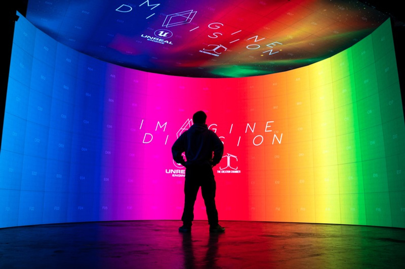
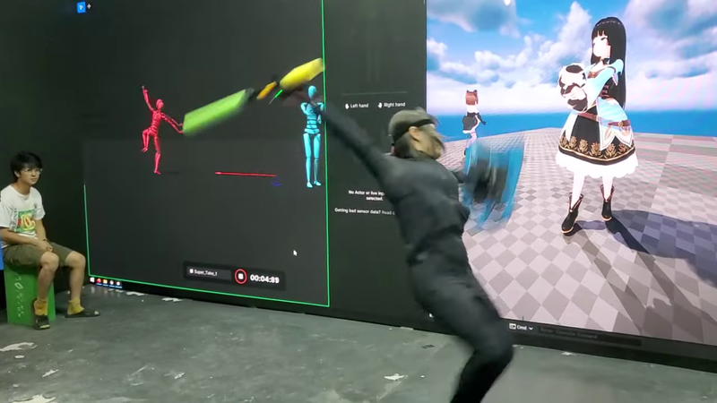
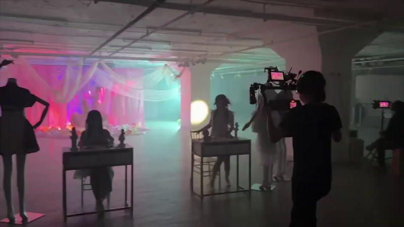
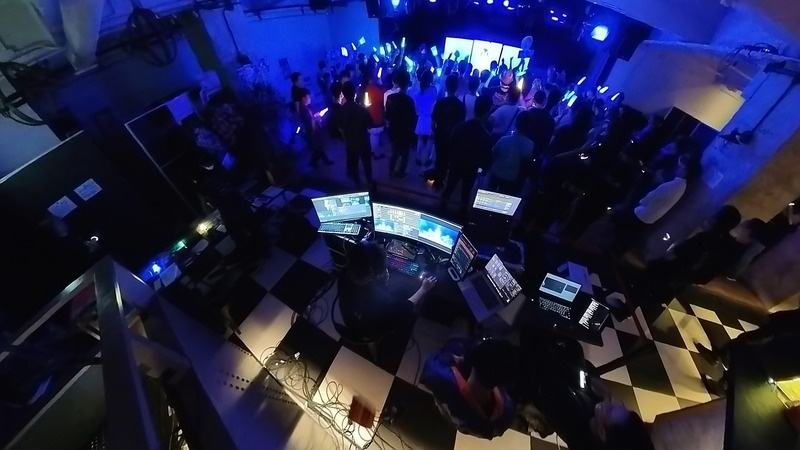

虛擬製作
鏡內視覺特效（ICVFX）、LED Wall、nDisplay、攝影機追蹤、鏡頭校正、OCIO、同步鎖相、時碼及即時合成。
我做的不是單一畫面，亦不是單一系統；重點是攝影機追蹤、同步、延遲、色彩、控制室與現場團隊可以一齊穩定工作。
鏡內視覺特效（ICVFX）、LED Wall、nDisplay、攝影機追蹤、鏡頭校正、OCIO、同步鎖相、時碼及即時合成。
動作捕捉、虛擬攝影機、NDI 媒體管線、直播系統，以及為 VTuber / 虛擬活動而設的影像化演出流程。
活動視覺系統、投影映射、vMix、Resolume、Dante、燈光控制、製作網絡和自訂軟件。
虛擬製作
我研究高解像 LED panel、處理實體搭建與吊掛、設定渲染節點和製作網絡，再將 Unreal Engine、nDisplay、攝影機追蹤及鏡頭校正接成一套可用的製作棚流程。
電影、活動工程和軟件工程之間的交界，就是 2025 NoodleDoStuff portfolio 的主線。
查看完整作品
以解決的製作問題分組，而不是只用單一 job title 去分類。

On-location VTuber 與虛擬藝人流程，把 mocap data、Unreal Engine、media server、NDI stream 和 low-latency workflow 接在一起。

攝影指導、assistant camera、gaffer、剪接、VFX 及 motion graphics，服務商業項目和 MV 製作。

Visual mixing、projection mapping、LED display、streaming、audio、lighting 及 corporate event / music festival 控制流程。
「作品從來不只是畫面，亦不只是系統；真正要做的是令兩者穩定到足夠讓人放心創作。」NoodleDoStuff portfolio direction